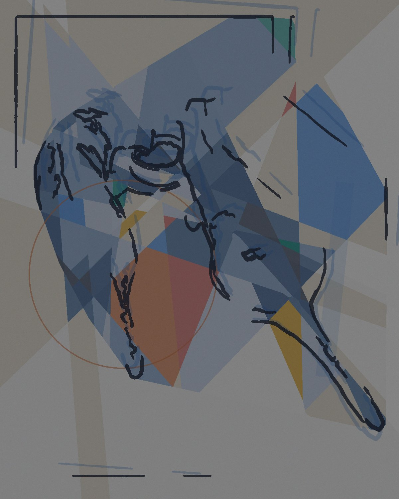
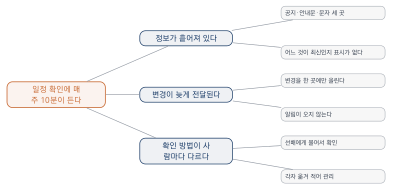

문제를 쪼개고 구조를 본다

이 장을 마치면
- 큰 문제를 다룰 수 있는 크기로 나눌 수 있다.
- 로직 트리를 그려 문제의 구조를 드러낼 수 있다.
- 증상과 원인을 구분하고 근본 원인을 찾아갈 수 있다.
- 주장을 뒷받침할 근거 자료를 모으고 정리할 수 있다.
- AI가 내놓은 분석을 검증하고 보완할 수 있다.
4장에서 문제를 하나 정했다면, 그것은 아마 아직 통째로는 손댈 수 없는 크기일 것이다. 학과 행사 참여율이 낮다는 문제를 그대로 붙들고 있으면 할 수 있는 일이 떠오르지 않는다. 그러나 참여율을 알게 되는 사람의 수, 알고도 오지 않는 비율, 오려다 못 오는 사정으로 나누면 손댈 자리가 보인다.
이 장은 그렇게 나누는 방법을 다룬다. 나누는 방식은 하나가 아니고, 어떻게 나누느냐에 따라 보이는 해법이 달라진다. 인공지능은 이 작업의 좋은 동료지만, 그럴듯한 구조를 잘 만들어 낼 뿐 그것이 맞는지는 확인하지 않는다는 점을 잊지 말아야 한다.
이 장의 제작은 망가뜨려 보는 것이다. 진짜 자료를 넣고, 일부러 빈 행과 이상한 값을 섞어 페이지가 어떻게 반응하는지 본다.
찾는 것은 오류가 아니라 조용히 틀리는 자리다. 멈추는 것은 눈에 보이지만, 잘못된 평균이 태연히 나오는 것은 아무도 알려 주지 않는다.
5.1 큰 덩어리는 그대로 풀 수 없다
4장에서 문제를 한 문단으로 적었다. 그런데 그 문단을 들고 자, 이제 어떻게 해결하지라고 물으면 대개 아무것도 떠오르지 않는다. 덩어리가 너무 커서 손댈 자리가 보이지 않기 때문이다.
손댈 자리를 만든다
일정 확인에 매주 10분이 든다는 문제를 통째로 붙들고 있으면 할 수 있는 일이 없다. 그런데 이렇게 나누면 달라진다.
- 정보가 세 곳에 흩어져 있다 → 한 곳에 모으면?
- 변경이 늦게 전달된다 → 바뀌면 알려 주면?
- 확인 방법이 사람마다 다르다 → 같은 곳을 보게 하면?
각각은 따로 해결할 수 있는 크기다. 그리고 셋을 다 할 필요도 없다. 하나만 해결해도 10분이 5분이 될 수 있다. 쪼갠다는 것은 곧 하나만 골라 해도 된다는 가능성을 만드는 일이다.
쪼개는 목적은 전부 해결하기 위해서가 아니다. 어느 하나부터 시작할지 고르기 위해서다. 그래서 잘 쪼갠 트리는 반드시 여기부터 하자는 결론으로 이어진다.
잘 쪼갠 조각의 조건
아무렇게나 나눈다고 되는 것이 아니다. 세 가지를 만족해야 쓸모가 있다.
첫째, 각각을 따로 다룰 수 있어야 한다. 조각 하나를 해결하는 데 다른 조각이 반드시 먼저 해결되어야 한다면, 그것은 나눈 것이 아니라 순서를 정한 것이다.
둘째, 합치면 원래 문제가 되어야 한다. 빠진 것이 있으면 나중에 어? 이건 어디에 속하지가 생긴다.
셋째, 크기가 비슷해야 한다. 하나가 나머지 전부만큼 크면 실제로는 안 나눈 것이다.
| 이렇게 나누면 | 무엇이 문제인가 |
|---|---|
| 입력 / 계산 / 출력 / 기타 | 기타가 절반이다. 나눈 것이 아니다 |
| 영수증 처리 / 엑셀 작업 | 둘이 겹친다. 엑셀에서 영수증을 처리한다 |
| 회계 담당자 문제 / 동아리 문제 | 층위가 다르다. 하나가 다른 하나에 포함된다 |
| 빠른 방법 / 정확한 방법 | 해법으로 나눴다. 문제를 나눠야 한다 |
마지막 줄을 특히 조심하자. 문제를 쪼갤 자리에서 해법을 쪼개기 시작하면, 4.1절에서 피했던 함정에 다시 빠진다. 지금은 문제를 나누는 시간이다.
나누는 축은 하나가 아니다
같은 문제도 어떤 기준으로 나누느냐에 따라 전혀 다른 그림이 나온다. 그리고 어느 축을 골랐느냐가 보이는 해법을 결정한다.
| 축 | 나눈 결과 | 보이는 해법 |
|---|---|---|
| 시간 순서 | 지출 발생 → 기록 → 취합 → 집계 → 공유 | 어느 단계를 없앨까 |
| 사람 | 지출한 사람 / 기록하는 사람 / 보는 사람 | 누구의 일을 옮길까 |
| 자료 형태 | 영수증 사진 / 손으로 적은 메모 / 이체 내역 | 어느 형태를 통일할까 |
| 시간 소모 | 옮겨 적기 2시간 / 분류 40분 / 검산 20분 | 가장 큰 것부터 |
표 5.2에서 마지막 축이 흥미롭다. 시간을 재어 나눠 보니 옮겨 적기가 전체의 3분의 2다. 그렇다면 분류를 아무리 잘 만들어도 소용이 없고, 옮겨 적는 일을 없애야 한다. 이런 판단은 나눠 보지 않으면 나오지 않는다.
두 가지 이상의 축으로 나눠 보자. 하나만 그리면 그 축이 보여 주는 해법에 갇힌다. 시간 순서로 한 번, 사람으로 한 번 나눠 보는 것만으로도 시야가 크게 달라진다.
어디까지 쪼개는가
더 이상 나눌 수 없을 때까지가 아니다. 손댈 수 있는 크기가 되면 멈춘다.
기준은 이렇다. 조각 하나를 보고 이건 이렇게 하면 되겠다는 생각이 떠오르면 충분히 쪼갠 것이다. 여전히 막막하면 한 단계 더 나눈다. 보통 두세 단계면 닿는다.
반대로 너무 잘게 쪼개면 조각이 스무 개가 되어 다시 막막해진다. 한 단계에 서너 개, 전체 세 단계를 넘기지 않는 것이 적당하다.
5.2 로직 트리: 빠짐없이, 겹치지 않게
앞 절에서 나눈 것을 그림으로 그리면 나무 모양이 된다. 이것을 로직 트리logic tree라고 부른다. 문제 하나가 뿌리에 있고, 오른쪽으로 갈수록 잘게 나뉜다.

그리는 순서
1. 뿌리에 문제를 적는다. 4장의 진술문을 한 줄로 줄여 적는다. 여기에 해법을 적으면 안 된다.
2. 왜 그런지 서너 갈래로 나눈다. 왜 10분이 드는가에 대한 답이 첫 가지가 된다. 앞 절에서 본 대로 나누는 축을 먼저 정하면 갈래가 잘 나온다.
3. 각 가지를 다시 나눈다. 손댈 수 있는 크기가 될 때까지. 두세 단계면 대개 충분하다.
4. 끝 가지를 확인한다. 이것이 사실인지 확인할 방법이 있는가? 없다면 5.4절의 조사 목록에 넣는다.
빠짐없이, 겹치지 않게
트리를 그리고 나면 두 가지를 점검한다. 컨설팅 업계에서는 이 원칙을 상호배타적이고 전체를 포괄한다MECE는 말로 부르지만, 용어를 외울 필요는 없다. 빠짐없이, 겹치지 않게 여덟 글자면 충분하다.
겹치는지 본다. 두 가지에 같은 내용이 들어 있으면 합치거나 경계를 다시 긋는다. 겹친 채로 두면 나중에 같은 일을 두 번 하게 된다.
빠졌는지 본다. 이쪽이 더 어렵다. 없는 것은 눈에 안 보이기 때문이다. 세 가지 방법이 있다.
- 반대편을 생각한다. 정보가 흩어져 있다가 있으면 정보 자체가 없다는 경우는 없는가?
- 사람을 훑는다. 4.2절의 이해관계자 목록을 놓고, 각자의 입장에서 빠진 가지가 없는지 본다.
- 남에게 보인다. 이것이 가장 확실하다. 옆 사람은 3초 만에 빈 곳을 찾아낸다.
기타라는 가지를 만들지 말자. 편하지만, 기타 안에 진짜 중요한 것이 들어가 있는 경우가 많다. 기타를 쓰고 싶어진다면 나누는 축이 잘못된 것이다 — 축을 바꿔 다시 나눠 보자.
원인 트리와 해법 트리
트리에는 두 종류가 있고, 섞으면 곤란해진다.
| 원인 트리 | 해법 트리 | |
|---|---|---|
| 묻는 것 | 왜 이런 일이 생기는가 | 무엇을 할 수 있는가 |
| 가지의 내용 | 원인, 조건, 구조 | 방법, 수단 |
| 언제 그리나 | 지금 (5장) | 6장 |
| 끝난 뒤 | 어디를 손볼지 정한다 | 무엇을 만들지 정한다 |
지금 그릴 것은 원인 트리다. 해법이 자꾸 떠오르면 종이 옆에 따로 적어 두고(6장에서 쓴다), 트리에는 넣지 않는다. 원인을 다 보기 전에 해법으로 넘어가면 처음 떠오른 해법으로 결론이 굳어진다.
트리에서 한 곳을 고른다
트리를 다 그렸으면 마지막 일이 남았다. 어느 가지부터 손댈 것인가.
고를 때 보는 것은 셋이다.
- 효과 — 이걸 해결하면 문제가 얼마나 줄어드는가 (앞 절의 옮겨 적기 2시간처럼 큰 것이 있는가)
- 할 수 있는가 — 내가 손댈 수 있는 범위인가 (학교 정책을 바꿔야 하는 것은 이번 학기에 어렵다)
- 확실한가 — 이것이 진짜 원인이라는 근거가 있는가 (없으면 5.4절로)
세 가지를 다 만족하는 가지가 있으면 그것부터 한다. 없으면 효과가 크고 할 수 있는 것을 고르되, 근거를 먼저 확인한다.
트리를 그리는 것 자체가 목적이 아니다. 예쁘게 그렸는데 그래서 어디부터?에 답하지 못한다면, 그 트리는 아직 쓸모가 없다. 모든 트리는 하나의 결정으로 끝나야 한다.
5.3 증상과 원인을 가려낸다
트리의 가지 하나를 골랐다면, 그것이 정말 원인인지 아니면 또 다른 증상인지 확인할 차례다. 증상을 고치면 잠깐 좋아졌다가 되돌아온다.
되돌아오는 해결
한 학생이 조별 과제 진행 상황이 안 보이는 문제(4.3절)를 다루면서, 공유 문서에 진행률을 적게 하자는 해법을 냈다. 첫 주에는 다들 적었다. 둘째 주부터 아무도 적지 않았다.
왜 그랬을까. 진행률을 적는 것은 일이었고, 그 일을 하는 사람에게 돌아오는 이익이 없었기 때문이다. 진짜 원인은 적을 곳이 없다가 아니라 적을 이유가 없다였다. 적을 곳을 만든 것은 증상을 고친 것이다.
어떤 해결이 사람의 성실함에 기대고 있다면 대개 증상을 고친 것이다. 잘 만든 해결은 사람이 원래 하던 행동에 얹혀서, 따로 애쓰지 않아도 굴러간다.
왜를 되풀이해 묻기
원인을 파고드는 가장 단순한 방법은 왜를 반복하는 것이다. 흔히 다섯 번이라고 하지만 횟수가 중요한 것은 아니다.
| 물음과 답 | |
|---|---|
| 1 | 왜 정산에 3시간이 드는가? → 영수증 60건을 손으로 옮겨 적기 때문 |
| 2 | 왜 손으로 옮겨 적는가? → 지출 기록이 사진으로만 남아 있기 때문 |
| 3 | 왜 사진으로만 남는가? → 지출하는 순간에 사진만 찍어 두기 때문 |
| 4 | 왜 그때 적지 않는가? → 적을 곳이 없고, 나중에 하면 된다고 생각하기 때문 |
| 5 | 왜 적을 곳이 없는가? → 회계 담당자만 장부를 갖고 있기 때문 |
다섯 번을 물으니 문제가 다른 곳에 있었다. 정산이 오래 걸린다가 아니라 지출한 사람이 그 자리에서 기록할 방법이 없다가 진짜였다. 그렇다면 만들 것도 달라진다 — 담당자용 계산 도구가 아니라 동아리원 누구나 그 자리에서 지출을 올릴 수 있는 화면이다.
왜를 기계적으로 다섯 번 물으면 억지스러운 곳에 닿는다. 왜 사람은 게으른가 같은 답이 나오면 너무 멀리 간 것이다. 내가 손댈 수 있는 마지막 지점에서 멈추는 것이 실용적이다.
함께 일어나는 것과 원인
원인을 찾다 보면 반드시 만나는 함정이 있다. 함께 일어난다고 해서 원인은 아니다.
예를 들어 조사해 보니 조별 과제 점수가 낮은 조는 대화방 메시지 수도 적더라는 결과가 나왔다고 하자. 그렇다면 메시지를 많이 보내게 하면 점수가 오를까? 그렇지 않을 가능성이 높다. 둘 다 조원들이 과제에 쏟은 시간이라는 다른 것의 결과일 수 있기 때문이다.
구분하는 방법은 다음 셋을 물어보는 것이다.
- 순서가 맞는가 — 원인이 결과보다 먼저 일어났는가?
- 다른 설명이 있는가 — 둘 다를 만들어 내는 제3의 것이 있지 않은가?
- 거꾸로는 아닌가 — 결과가 원인을 만든 것은 아닌가?
교양 수업에서 이것을 엄밀히 가릴 필요는 없다. 다만 함께 일어난 것을 원인이라고 단정하지 않는 습관은 필요하다. 발표에서 이 구분을 하지 않으면 반드시 질문을 받는다.
원인 후보를 적어 둔다
이 절의 결과물은 원인 후보 목록이다. 하나로 정하지 않아도 된다. 오히려 두셋을 두고 다음 절에서 근거로 가려내는 편이 낫다.
후보 1 :
이렇게 생각하는 근거 :
이것이 원인이라면 관찰되어야 할 것 :
확인 방법 :
후보 2 :
...
지금 가장 유력한 것 : (그 이유 : )두 번째 칸 이것이 원인이라면 관찰되어야 할 것이 중요하다. 이것을 적어 두면 확인이 쉬워진다. 예를 들어 그 자리에서 기록할 방법이 없어서가 원인이라면, 지출 후 며칠 지나 기록된 건이 많을 것이 관찰되어야 한다. 그러면 영수증 날짜와 기록 날짜를 비교해 보면 된다.
원인을 처음부터 정확히 맞힐 필요는 없다. 만들어 보고 나서 아, 그게 아니었구나를 알게 되는 것도 정상적인 과정이다. 중요한 것은 무엇을 원인이라고 생각했는지 적어 두는 것이다. 적어 두지 않으면 나중에 왜 그렇게 만들었는지도 설명하지 못한다.
5.4 근거로 확인한다
앞 절까지는 생각이었다. 이 절에서는 그 생각이 맞는지 확인한다. 그럴 것이다와 그렇다는 다르고, 그 차이를 메우는 것이 근거다.
손에 넣을 수 있는 근거
교양 수업의 한 주 안에서 모을 수 있는 것으로 한정하자. 세 가지면 충분하다.
이미 있는 기록. 가장 싸고 가장 정확하다. 대화방 대화, 지난 학기 정산 파일, 공지 게시판의 날짜, 출석부. 우리는 생각보다 많은 것을 이미 기록하고 있다. 새로 조사하기 전에 이미 있는 것부터 찾는다.
짧은 설문. 다섯 문항을 넘기지 않는다. 응답이 스무 건이면 충분하다. 이때 어떻게 생각하십니까가 아니라 최근에 어떻게 하셨습니까를 묻는다(4.2절).
직접 세어 보기. 가장 확실하다. 다음번에 그 일을 할 때 시계를 켜고, 몇 건인지 세고, 어디서 막혔는지 적는다. 한 번만 해도 추정치가 사실로 바뀐다.
| 확인하고 싶은 것 | 볼 것 |
|---|---|
| 정말 3시간이 걸리는가 | 다음 정산 때 시계로 잰다 |
| 정말 60건인가 | 지난달 정산 파일의 행 수를 센다 |
| 오류가 정말 생기는가 | 지난 3개월 정산과 통장 내역을 대조한다 |
| 남들도 불편한가 | 5명에게 물어본다 (4.2절) |
| 지출 후 며칠 뒤 기록되는가 | 영수증 날짜와 기록 날짜를 비교한다 |
자료를 모으는 형태
여기서 앞을 내다보는 조언을 하나 하겠다. 지금 모으는 자료는 9장과 11장에서 다시 쓴다. 그때 편하려면 지금 형태를 맞춰 두는 것이 좋다.
원칙은 하나다. 표 한 장, 한 행이 한 건.
날짜 항목 금액 결제수단 기록한사람
2026-03-04 간식 12000 카드 김OO
2026-03-04 인쇄비 3500 현금 이OO
2026-03-07 대관료 50000 이체 김OO이렇게 모으면 나중에 어떤 도구에서든 바로 쓸 수 있다. 반대로 다음과 같이 모으면 나중에 정리하는 데 시간이 더 든다.
- 한 칸에 여러 정보를 넣는다 (3/4 간식 12000원 카드)
- 표기가 통일되지 않는다 (카드, 신용카드, 체크)
- 빈칸을 다양하게 표시한다 (빈칸, -, 없음, 0)
- 제목 줄이 여러 줄이거나 중간에 요약 행이 끼어 있다
- 숫자에 단위를 붙인다 (12,000원)
자료 정리에 드는 시간의 대부분은 모으는 방식이 통일되지 않아서 생긴다. 지금 5분을 들여 형태를 정해 두면 11장에서 두 시간을 아낀다. 이것은 과장이 아니다.
자료는 얼마나 필요한가
완벽할 필요는 없다. 이 수업의 목적에는 다음 정도면 충분하다.
- 시간·횟수: 3회 이상 측정. 한 번은 우연일 수 있다
- 사람의 의견: 5명. 그 이상은 새로운 이야기가 잘 안 나온다
- 기록 자료: 있는 만큼. 3개월치가 있으면 충분하다
부족한 것을 채우려고 학기의 절반을 쓰지 말자. 근거의 목적은 확신이 아니라 방향을 정하는 것이다.
근거가 예상과 다를 때
가끔 조사 결과가 예상을 뒤집는다. 3시간 걸린다고 생각했는데 재 보니 1시간 20분이거나, 다들 불편해할 줄 알았는데 아무도 신경 쓰지 않는 경우다.
이때가 이 수업에서 가장 값진 순간이다. 만들기 전에 알았기 때문이다. 다음 중 하나를 한다.
- 문제 진술문의 숫자를 고친다 (대개 이것)
- 문제 자체를 바꾼다 (조사 중에 더 아픈 문제를 발견한 경우)
- 문제를 접는다 (실제로 문제가 아니었던 경우)
세 번째도 실패가 아니다. 실습 1-3의 목록에서 다음 것을 꺼내면 된다. 그러라고 열 개를 적어 둔 것이다.
조사해 보니 별 문제가 아니었지만 이미 시간을 썼으니 그냥 진행하자가 가장 나쁜 선택이다. 4주 뒤에 아무도 쓰지 않는 결과물 앞에서 같은 것을 다시 깨닫게 된다. 바꾸는 비용은 지금이 가장 싸다.
5.5 AI에게 분석시키고 검증하기
이 장의 작업 — 쪼개고, 원인을 찾고, 근거를 정리하는 일 — 은 인공지능이 상당히 잘하는 영역이다. 구조를 만드는 일이고, 자료가 많은 종류의 작업이기 때문이다. 다만 잘하는 만큼 위험도 있다. 그럴듯한 헛구조가 나온다.
쪼개게 하기
아래는 내가 정의한 문제다.
(문제 진술문을 붙여 넣는다)
이 문제를 서로 다른 세 가지 축으로 각각 나눠 줘. 예를 들어 시간 순서로 한 번, 관련된 사람으로 한 번, 자료의 형태로 한 번 같은 식이다.
각 축마다:
- 3–4개의 가지로 나눌 것
- 가지끼리 겹치지 않게 할 것
- 기타라는 가지는 만들지 말 것
- 그 축으로 나눴을 때 어떤 해법이 보이는지 한 줄로 덧붙일 것
세 축을 한꺼번에 받는 것이 요령이다. 하나만 시키면 가장 뻔한 축(대개 시간 순서)이 나오고, 우리는 그 축에 갇힌다.
빠진 것을 찾게 하기
내가 그린 트리를 주고 점검시킨다. 이쪽이 더 유용하다.
아래는 내가 그린 로직 트리다.
(트리를 글로 옮겨 적는다 — 들여쓰기로 계층을 표시하면 된다)
다음을 지적해 줘. 잘한 점은 말하지 않아도 된다.
1. 겹치는 가지 — 어느 것과 어느 것이 왜 겹치는가
2. 빠진 가지 — 이 분류에서 다뤄지지 않는 경우는 무엇인가
3. 층위가 맞지 않는 가지 — 다른 가지에 포함되어야 할 것
4. 원인이 아니라 해법이 들어와 있는 가지
각 지적에 왜 그렇게 보는지를 붙여 줘.
4번을 반드시 넣자. 사람이 트리를 그리다 보면 자기도 모르게 해법을 적게 되는데, 스스로는 잘 보이지 않는다.
나온 결과를 검증하는 법
받은 트리를 그대로 쓰면 안 된다. 세 가지를 확인한다.
하나, 우리 사정에 맞는가. 인공지능이 만든 가지 중에는 일반론에서 온 것이 섞여 있다. 우리 동아리에는 해당되지 않는 것을 지운다.
둘, 근거가 있는가. 각 가지 옆에 이걸 어떻게 아는가를 적어 본다. 답이 없는 가지가 대부분일 것이다. 그것들은 5.4절의 조사 목록으로 보낸다.
셋, 그래서 어디부터 할지 나오는가. 트리가 예쁜데 결정이 안 나온다면 아직 쓸모가 없다(5.2절).
방금 만든 트리에서, 각 가지가 사실로 확인된 것인지 추측인지 표시해 줘. 추측이라면 그것을 확인하려면 무엇을 보면 되는지도 알려 줘. 내가 준 자료에 없는 내용은 전부 추측으로 표시해야 한다.
이 프롬프트의 마지막 문장이 핵심이다. 이렇게 못 박지 않으면 일반적인 지식을 사실로 표시한다.
인공지능이 만든 트리는 초안이지 결론이 아니다. 가지의 절반은 우리 사정과 무관하고, 나머지 절반 중 상당수는 근거가 없다. 그래도 유용한 이유는, 빈 종이에서 시작하는 것보다 지우고 고치는 편이 훨씬 빠르기 때문이다.
자료를 읽히기
5.4절에서 모은 자료가 있다면 그것을 함께 주자. 답이 달라진다.
첨부한 표는 우리 동아리의 지난 3개월 지출 기록이다(각 행이 지출 한 건).
이 자료만 근거로 다음을 알려 줘. 자료에서 확인되지 않는 것은 [자료에 없음]이라고만 표시할 것.
1. 월별 건수와 금액
2. 항목별 분포 — 상위 세 항목
3. 기록 방식이 통일되지 않은 곳 (표기가 여러 가지인 열)
4. 빠진 값이 있는 행이 몇 건인지
5. 이 자료에서 눈에 띄는 이상한 점
3번과 4번이 특히 유용하다. 자료가 지저분하다는 것을 미리 알아야 9–11장에서 대비할 수 있다. 5번은 사람이 놓치는 것을 찾아 주는 경우가 있다 — 다만 지어낼 수도 있으니 반드시 원자료에서 확인한다.
이 장의 결과물
5장이 끝나면 다음 넷이 손에 있어야 한다. 6장은 이것을 받아 시작한다.
- 두 가지 이상의 축으로 그린 로직 트리
- 원인 후보 두셋과 각각의 근거
- 실제로 모은 자료 (표 한 장, 한 행이 한 건)
- 어느 가지부터 손댈 것인지에 대한 결정과 그 이유
실습 5-1. 두 가지 축으로 쪼개기
4장에서 정의한 문제를 서로 다른 두 축으로 나눈다. 손으로 그린다 — 도구를 쓰면 예쁘게 만드는 데 시간을 뺏긴다.
- 첫 번째 축: 시간 순서로 (일이 벌어지는 차례대로)
- 두 번째 축: 사람으로 또는 자료 형태로
- 두 트리를 나란히 놓고, 어느 쪽이 더 손댈 자리를 잘 보여 주는지 적는다
실습 5-2. 겹침과 빠짐 찾기
옆 사람과 트리를 바꾼다. 상대의 트리에서 다음을 표시해 준다.
- 겹치는 가지 — 두 가지를 선으로 잇고 무엇이 겹치는지 적는다
- 빠진 가지 — 빈자리에 그려 넣는다
- 해법이 들어와 있는 가지 — 동그라미
- 이건 무슨 뜻인지 모르겠다는 가지 — 물음표
돌려받은 뒤, 지적 중 무엇을 받아들이고 무엇을 기각할지 정한다(4.5절과 같은 방식).
실습 5-3. 왜를 다섯 번
트리에서 고른 가지 하나에 대해 표 5.4처럼 왜를 이어서 묻는다.
- 몇 번째에서 내가 손댈 수 있는 지점에 닿았는가?
- 처음 생각한 원인과 마지막에 닿은 원인이 같은가?
- 다르다면, 만들 것이 어떻게 달라지는가?
3번의 답이 있다면 이 실습은 성공이다.
실습 5-4. 근거 모으기
원인 후보 하나를 골라 30분 안에 모을 수 있는 근거를 실제로 모은다. 5.4절의 세 가지 방법 중 하나를 쓴다.
확인하려는 것 :
방법 : (기존 기록 / 짧은 설문 / 직접 세기)
모은 자료 :
결과 :
예상과 같았나 : (같다 / 다르다 : 어떻게)
그래서 무엇을 바꾸나 :마지막 칸이 바꿀 것 없음이면 그것도 결과다. 다만 정말 그런지 한 번 더 생각해 보자.
실습 5-5. 자료 형태 정리하기
모은 자료를 5.4절의 원칙(표 한 장, 한 행이 한 건)에 맞춰 정리한다. 자료가 20행이 안 되어도 괜찮다.
- 열 이름을 정한다 (띄어쓰기 없이, 한 단어로)
- 표기를 통일한다 (카드/신용카드 → 하나로)
- 빈칸 표시를 통일한다
- 숫자에서 단위와 쉼표를 뺀다
01_문제/폴더에 저장한다
이 파일은 9.4절과 11.3절에서 그대로 쓴다. 지금 정리해 두면 그때 두 시간을 아낀다.
실습 5-6. AI에게 트리 점검받기
5.5절의 내 트리를 점검받기 프롬프트로 자기 트리를 점검받는다. 그리고 각 가지 옆에 사실인지 추측인지 표시한다.
- 사실로 확인된 가지는 몇 개인가?
- 추측인 가지 중 확인해야 할 것 셋을 고른다
- 그 셋을 어떻게 확인할지 적는다
실습 5-7. 제작 — 실제 자료를 끝까지 넣어 본다
실습 5-5에서 정리한 진짜 자료를 페이지에 넣고, 끝까지 밀어붙인다.
- 정리하기 전의 자료를 먼저 넣는다. 무엇이 깨지는가?
- 정리한 자료를 넣는다. 무엇이 달라졌는가?
- 자료를 일부러 망가뜨려 본다 — 빈 행 추가, 열 이름 바꾸기, 숫자 자리에 글자 넣기
- 각각에 대해 페이지가 어떻게 반응했는지 적는다 (멈춤 / 조용히 틀림 / 안내)
넣은 것 반응 위험한가
--------------------------------------------------------------
빈 행 3개
열 이름을 다르게
숫자 칸에 "미정"
같은 행을 두 번
--------------------------------------------------------------
가장 위험한 반응 : (조용히 틀린 것이 있었나?)조용히 틀린 것이 하나라도 있으면 그것부터 고친다. 오류로 멈추는 것보다 훨씬 나쁘다(12.4절).
제출 — 위 표, 고친 내용, 그리고 자료를 어떤 형태로 모아야 하는지에 대한 자기 규칙 다섯 줄. 이 규칙이 9장에서 입력 화면을 만들 때 그대로 쓰인다.
5장 요약
- 쪼개는 목적은 전부 해결하기 위해서가 아니라 어느 하나부터 시작할지 고르기 위해서다. 잘 쪼갠 트리는 반드시 여기부터 하자는 결론으로 이어진다.
- 잘 나뉜 조각의 조건 셋 — 각각을 따로 다룰 수 있고, 합치면 원래 문제가 되고, 크기가 비슷하다.
- 같은 문제도 나누는 축에 따라 전혀 다른 그림이 나온다. 시간 순서, 사람, 자료 형태, 시간 소모 등. 두 축 이상으로 나눠 보아야 한 축이 보여 주는 해법에 갇히지 않는다.
- 로직 트리logic tree는 빠짐없이, 겹치지 않게 그린다(컨설팅에서 말하는 상호배타적이고 전체를 포괄한다MECE). 빠진 것은 반대편을 생각하거나, 이해관계자를 훑거나, 남에게 보여서 찾는다.
- 기타라는 가지를 만들지 않는다. 만들고 싶어진다면 나누는 축이 잘못된 것이다.
- 5장에서 그릴 것은 원인 트리다. 해법이 떠오르면 따로 적어 두고(6장에서 쓴다) 트리에는 넣지 않는다.
- 어떤 해결이 사람의 성실함에 기대고 있다면 대개 증상을 고친 것이다. 잘 만든 해결은 사람이 원래 하던 행동에 얹혀서 굴러간다.
- 왜를 되풀이해 물으면 진짜 손댈 지점이 드러난다. 다만 기계적으로 다섯 번 세지 말고 내가 손댈 수 있는 마지막 지점에서 멈춘다.
- 함께 일어난다고 원인은 아니다. 순서가 맞는지, 둘 다를 만드는 제3의 것이 있는지, 거꾸로는 아닌지 물어본다.
- 근거는 세 가지로 모은다 — 이미 있는 기록(가장 싸다), 짧은 설문 다섯 문항, 직접 세어 보기. 시간·횟수는 3회 이상, 사람 의견은 5명이면 충분하다.
- 자료는 표 한 장, 한 행이 한 건 형태로 모은다. 표기를 통일하고 단위를 빼 두면 9장과 11장에서 두 시간을 아낀다.
- 조사 결과가 예상과 다르면 그때가 가장 값진 순간이다. 만들기 전에 알았기 때문이다. 문제를 접는 것도 실패가 아니다 — 바꾸는 비용은 지금이 가장 싸다.
- 인공지능이 만든 트리는 초안이다. 가지의 절반은 우리 사정과 무관하고 나머지 상당수는 근거가 없다. 반드시 사실인지 추측인지 표시하게 하고, 추측은 조사 목록으로 보낸다.
5장 연습문제
- ★ 잘 나뉜 조각의 조건 세 가지를 쓰고, 각 조건을 어기면 어떤 문제가 생기는지 설명하시오.
- ★ 다음은 학과 홍보가 잘 안 된다는 문제를 나눈 것이다. 빠짐없이, 겹치지 않게의 관점에서 잘못된 점을 모두 지적하시오.
- 인스타그램 관리 부족
- 홍보물 디자인 문제
- SNS 운영 인력 부족
- 기타
- ★ 원인 트리와 해법 트리의 차이를 설명하고, 5장에서 그리는 것이 어느 쪽인지와 그 이유를 쓰시오.
- ★★ 도서관 열람실 좌석이 부족하다는 문제를 서로 다른 두 축으로 나누어 각각 트리를 그리시오. 그리고 두 축이 각각 어떤 해법을 보여 주는지 비교하시오.
- ★★ 다음 주장에 대해 함께 일어남과 원인을 구분해 논하시오. 세 가지 확인 질문(순서·다른 설명·역방향)을 모두 적용할 것.
조사 결과 학과 행사에 자주 참여한 학생일수록 학점이 높았다. 따라서 행사 참여를 늘리면 학생들의 학점이 오를 것이다.
- ★★ 다음 자료 표에서 5.4절의 기준으로 볼 때 문제가 되는 곳을 모두 찾고, 어떻게 고쳐야 하는지 쓰시오.
날짜 내용 금액 비고 3/4 간식 (카드) 12,000원 2026.3.4 인쇄비 3500 현금 3월 7일 대관료 50000 이체 - ★★★ 자기 문제의 원인 후보 하나를 골라, 5.4절의 방법으로 실제 근거를 모아 확인하시오. 보고에는 (1) 확인하려던 것, (2) 쓴 방법과 그 이유, (3) 모은 자료, (4) 결과, (5) 예상과 달랐는지, (6) 그에 따라 무엇을 바꿀 것인지가 포함되어야 한다.
- ★★★ 5.5절의 방법으로 인공지능에게 자기 문제의 로직 트리를 세 가지 축으로 만들게 한 뒤, 각 가지를 사실/추측/우리 사정과 무관으로 분류하시오. 그리고 인공지능이 만든 트리와 자신이 손으로 그린 트리의 차이를 분석해, 어느 쪽이 어떤 면에서 나았는지 서술하시오.